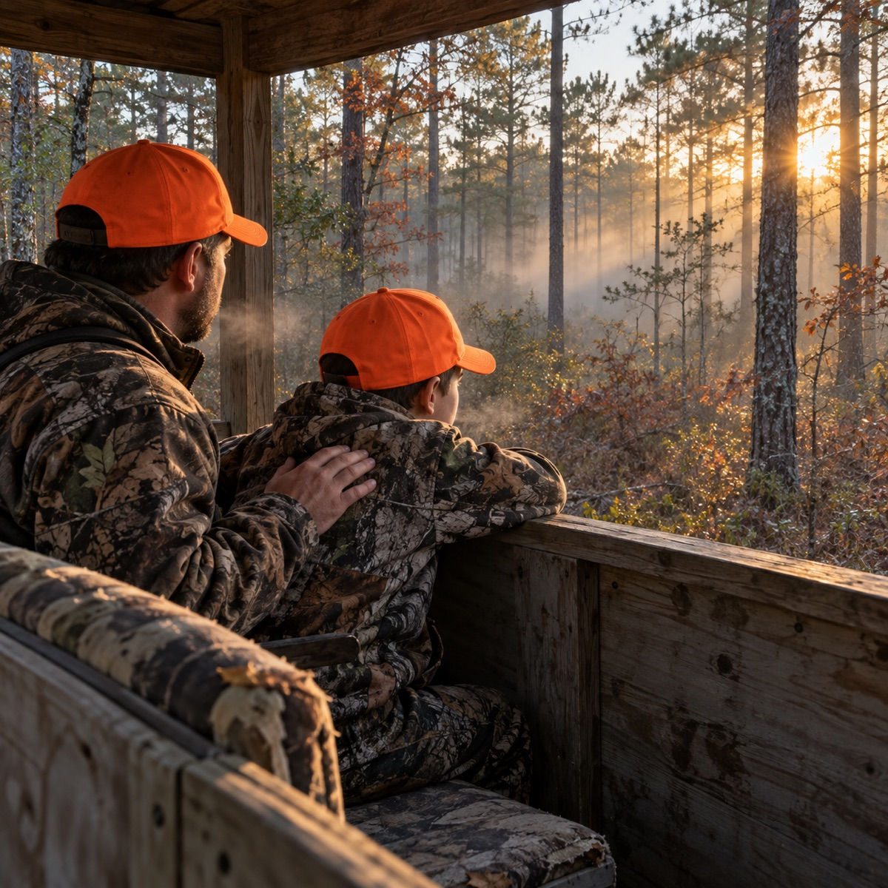

When a kid gets bored there's almost always a cell phone or iPad or something with a screen nearby. Our sons and daughters grow up with plenty of things competing for their attention, and learning to give that attention to something that isn't trying to entertain them takes practice. Taking them deer hunting gives us a chance to sit beside them while they learn.
In a deer stand, there may be a long stretch when nothing much happens. You can't make the woods get interesting on demand. So you help them learn what to watch for and what to listen to. A sound has them looking one way, and a little movement draws their eyes somewhere else. They begin to notice things they would've missed while wishing something would happen. Being quiet and still gives them a chance to see what the world does when nobody's making noise.
That takes some patience, especially when they're tired or their feet are cold, or it's hot and the gnats won't leave their face alone. A mosquito can make being still seem like an unreasonable thing to ask of anybody. We're beside them to help them through those small discomforts, and that takes some patience from us, too.
And after all that, you may walk back without a deer. They paid attention, they stayed quiet, and they tried hard. Nothing came within range. That's a hard part of hunting to explain to a child who wanted so badly to get one, because there isn't anything you can promise about next time, either.
We don't have to talk them out of being disappointed before we reach the truck. But we can help them see that a hunt without a deer wasn't a day when they did everything wrong, or a reason to quit. They learned something they can take back to the stand. And perhaps far beyond it.
That's what I learned from hunting, and what I hope they learn too. Practice being still, paying attention when it isn't easy, and giving something their effort without knowing how it'll turn out. And when they come home empty-handed, going back out again.